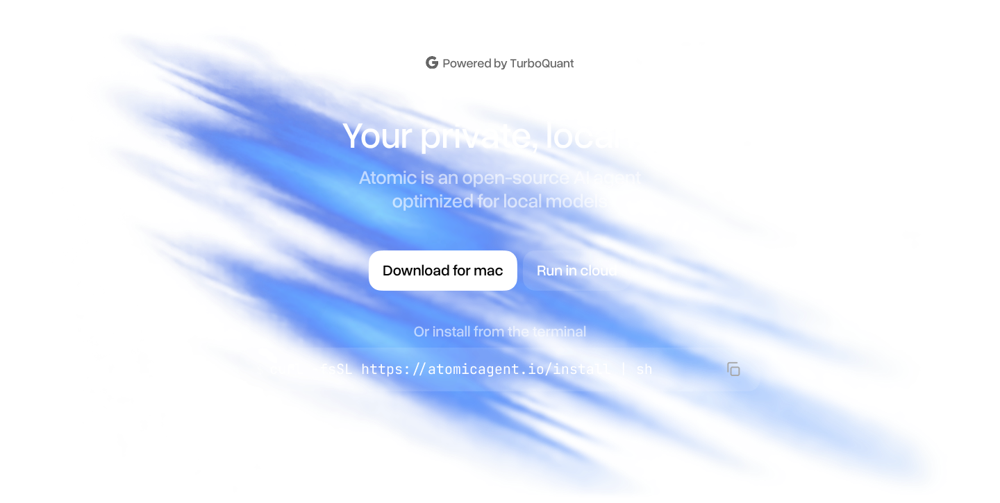
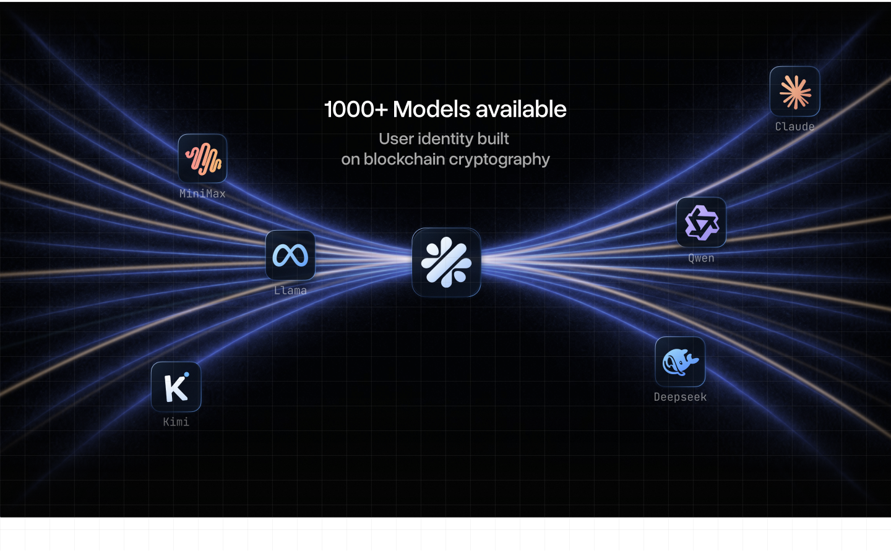

КТ3 / Проектный каркас дипломного решения
Atomic Chat.
От первого экрана сайта
до первого диалога в приложении.
прототип

Что я
спроектировал
Для Boiler Lab я сделал адаптивный лендинг Atomic Chat. Для диплома доработал интерфейс приложения: выбор модели, первый диалог, загрузку, ошибки и настройки.
- 3
- ширины лендинга
- 59
- экранов и состояний в Figma
- 21
- состояние в веб-прототипе
Первый
диалог
На лендинге человек знакомится с продуктом и переходит к скачиванию. В приложении выбирает локальную модель, отправляет запрос и получает ответ. Если генерация остановилась, можно повторить запрос или сменить модель.
Своя среда
для моделей
На сайте модели визуально сходятся к знаку Atomic. В приложении ту же идею поддерживает постоянная навигация: чат, каталог и инструменты доступны из одного окна.

Overused Grotesk для текста, JetBrains Mono для команд. Скачивание выделено белой кнопкой.
Тёмные поверхности, иконки Vuesax и отдельные состояния загрузки, пустого результата и ошибки.
Что дальше
на практике
- Сверить адреса скачивания, требования и формулировки с заказчиком.
- Собрать первый экран в Zero Block, проверить 1440, 768 и 390 px и промежуточные ширины.
- Перенести остальные блоки, FAQ и якоря. Пройти весь сценарий, проверить ссылки и опубликовать учебный черновик.
Полный отчёт
Карта сайта и сценариев, макеты, визуальная система, обратная связь и план сборки в Tilda.